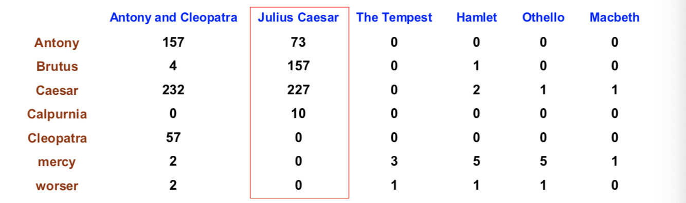
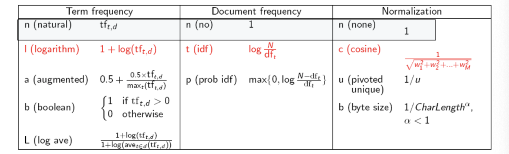
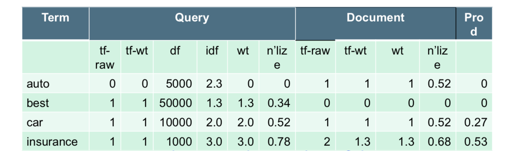
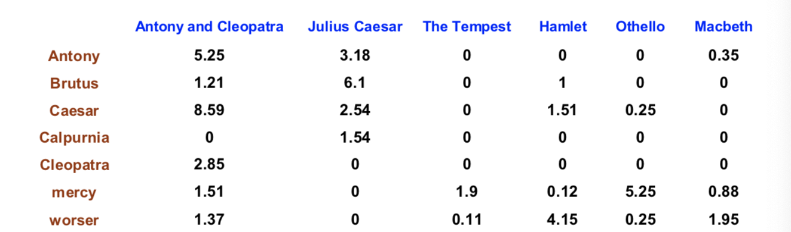
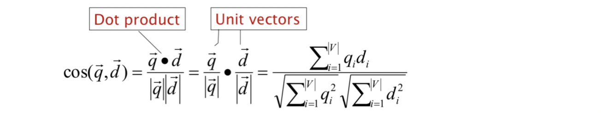
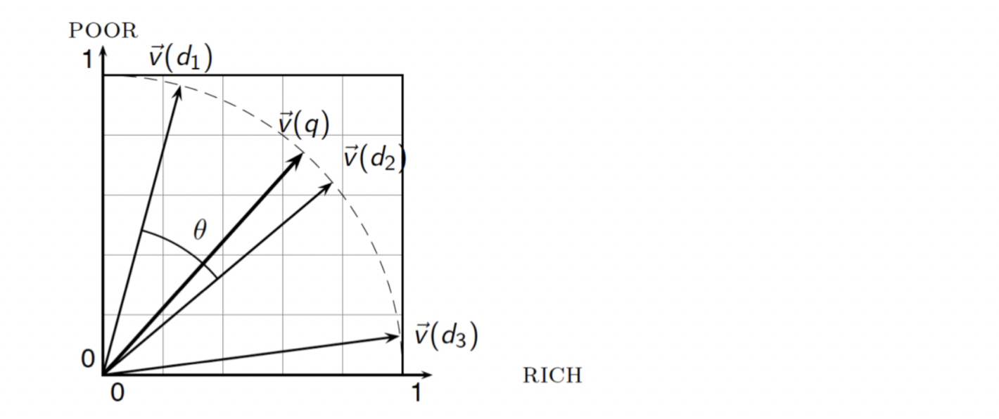
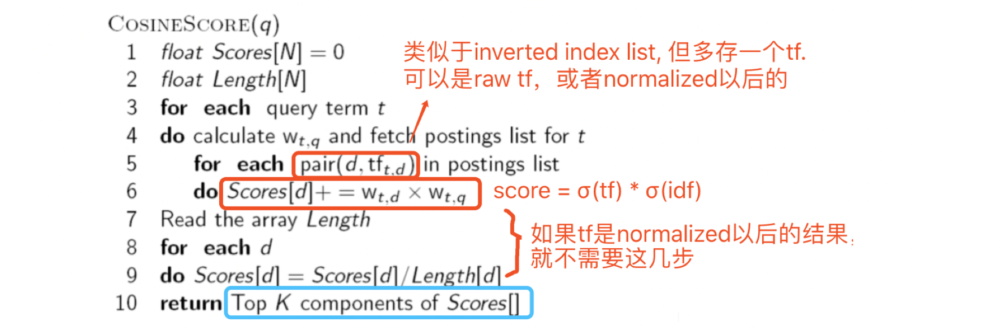
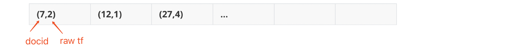
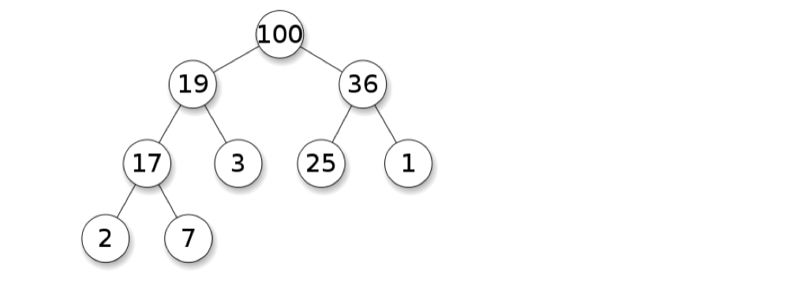

Abstract:
- Ranked retrieval
- Tf-idf
- vector space model
Why ranked retrieval model?
- Boolean Model => documents either 1 or 0 (match or not).
- Not good for the majority of users
- Most users incapable of writing Boolean queries
- Most users don’t want to wade through 1000s of results.
- Problem: feast or famine (result too many or too few)
- Query 1: “standard user dlink 650” → 200,000 hits
- Query 2: “standard user dlink 650 no card found”: 0 hits
Ranked retrieval models
-
Ranked retrieval models returns an ordering over the (top) documents in the collection with respect to a query.
-
Boolean model returns D1:1, D2:1
-
Ranked retrieval model returns D1:0.75, D2:0.32
-
Free text queries: Rather than a query language of operators and expressions, the user’s query is just one or more words in a human language.
-
“Feast or famine”: not a problem in ranked retrieval：
- When a system produces a ranked result set, large result sets are not an issue
- Indeed, the size of the result set is not an issue
- We just show the top k ( ≈ 10) results
- We don’t overwhelm the user
Scoring
- How can we rank-order the documents in the collection with respect to a query?
- Assign a score – say in [0, 1] – to each document
- This score measures how well document and query “match”.
- Let’s start with a one-term query
- If the query term does not occur in the document: score should be 0
- The more frequent the query term in the document, the higher the score (should be)
Jaccard coefficient
-
A commonly used measure of overlap of two sets A and B
- jaccard(A,B) = |A ∩ B| / |A ∪ B|
- jaccard(A,A) = 1
- jaccard(A,B) = 0 if A ∩ B = 0
-
Example
- Query: ides of march
- Document 1: caesar died in march => Jaccard(q,doc1) = 1/6
- Document 2: the long march => Jaccard(q,doc1) = 1/5
-
Issues
- It doesn’t consider term frequency (how many times a term occurs in a document) => tf
- Rare terms in a collection are more informative than frequent terms. Jaccard doesn’t consider this information. => idf
- We need a more sophisticated way of normalizing for length.
- Jaccard similarity favor the small document, we can tell that from the example above.
General methods to compare documents:
Ocurr times Query A Query B D1 100 2 D2 1 20
Prioritige: If we know A is more important than B, then we scoring according to A. So consider query B only if we got the same score in query A.
- 这个方法，我们需要知道哪个query更为重要，所有在IR中基本不用
Weight sum: we give the queries certain weight.
E.g, weight(A):0.7 weight(B):0.3
score(D1) = 100 * 0.7 + 2 *0.3
score(D2) = 1 * 0.7 + 20 *0.3
Different about weight sum in ML & IR:
- In ML, we try to learn the best weigths. We assign some term weights to experiments and adjust the weight according the result.
- In IR, weights are computed by some certain functions. Then we can compute the scores of the documents and rank them.
Bag of words model（BoW）
- Vector representation the number of occurrences of a term in a document

- BoW model contains term frequency(tf), but not order
- E.g., “John is quicker than Mary” and “Mary is quicker than John” have the same vectors
Model ——> Representation
每种模型都取舍，例如BoW就保留了词频信息而没有保留词位置信息。后面还会介绍更多侧重点不同的模型
tf
-
term frequency (tf): the number of times that t occurs in d.
-
raw tf
- A document with 10 occurrences of the term is more relevant than a document with 1 occurrence of the term.
- But not 10 times more relevant.
-
log tf
- The log frequency weight of term t in d :
- Score for a document-query pair: sum over terms t in both q and d:
idf
- Rare terms are more informative than frequent terms, so we want a high weight for rare terms.
- inverse document frequency (idf): a measure of how much information the word provides, i.e., if it’s common or rare across all documents.
- We define idf of t:
- with:
- dft: the document frequency of t: the number of documents that contain t
- N: total number of documents in the corpus N =|D|
- with:
tf-idf
- The tf-idf weight of a term is the product of its tf weight and its idf weight.
- Increases with the number of occurrences within a document
- Increases with the rarity of the term in the collection
- Final ranking score:
tf-idf weighting has many variants

- SMART Notation: denotes the combination in use in an engine, with the notation ddd.qqq, using the acronyms from the previous table
lnc.ltc
-
Inc => documnet vector, I for log tf, n for no idf and c for cosine normalization
-
Itc => query vector, I for log tf, t for idf and c for cosine normalization
-
E.g.,

-
Query:
N = 1,000,000
For term “car”, wt(“car”) = (1+log1)*2 = 2
-
Document:
For term “car”, wt(“car”)=(1+log1) = 1
-
Score:
= <Wq, Wd> = 0 * 0.52 + 0.34 * 0 + 0.52 * 0.52 + 0.78 * 0.68 = 0.8
-
Vector Space Model
-
Binary -> Count -> Weight Matrix (tf-idf)

Each document is now represented by a real-valued vector of tf-idf weights ∈ R^|V|^
Documents as vectors
- |V|-dimensional vector space
- Very high-dimensional: tens of millions of dimensions when you apply this to a web search engine
- very sparse vectors
Queries as vectors
-
Represente the queries as vectors in the space, same as the document
How to Rank documents according to their proximity to the query in this space?
Formalizing vector space proximity
-
Euclidean distance? —— NOT a good idea, cause it is sensitive to different lengths
-
Angle:
- Rank documents in decreasing order of the angle between query and document
- Rank documents in increasing order of cosine(query,document)
-
A vector can be (length-) normalized by dividing each of its components by its length for this we use the L2 norm: L2 范数
- Dividing a vector by its L2 norm makes it a unit (length) vector (on surface of unit hypersphere)
- Long and short documents now have comparable weights 长文档和短文档之间的长度差异就不会影响相关性了
Why nomalization?
- we only care about angle(cosine score) between d nd q, not size d (length of vector)
Cosine(query, document)

- qi is the tf-idf weight of term i in the query
- di is the tf-idf weight of term i in the document
Cosine for length-normalized vectors
- For length-normalized vectors, cosine similarity is simply the dot product (or scalar product):
With q, d length-normalized.

Computering cosine scores


3 Algorithms of selecting top K
-
Sort(s)
Return s[1:3]
time complexity: O(nlogn)
-
Use Memory
-
类似于inserting sort
-
go throngh each element, and update top k
-
in the worst case similar to queue
-
worst time complexity: nO(k)* with n docs, and k about 1000 for search engines, so it’s not good enough
-
Optimize: using Heap (Priority queue)
Priority queue
- similart to a normal queue excpet that each element has a certain priority.
Heap
- a heap is a specialized tree-based data structure that satisfies the heap property: if P is a parent node of C, then the key (the value) of P is either greater than or equal to (in a max heap) or less than or equal to (in a min heap) the key of C.

-
We use a min-heap to find top k scores. H for heap
- Generate min-heap for current k scores.
- when a new score(x) comes into heap, using H.push(x)
- heap.push time complexiy is O(logn), for this case is O(logk)
- pop the smallest score. using H.pop()
- heap.push time complexiy is also O(logn), for this case is O(log(k+1))
So, finally we get:
- time complextiy: n*O(logk)
- space complextiy: O(k)
- Quick Select
- QuickSelect is similar to QuickSort to find the top-K elements from an array
- Takes O(n) time
- Sorting the top-K items takes O(k*log(k)) time
- Total time is O(n + k*log(k))
- space complexity is O(n)
- less time but more space